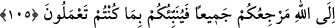

SİZ KENDİNİZE BAKIN
105. Ey îman edenler! Siz kendinize bakın. Siz doğru yolda olduğunuz taktirde
sapan kimse size zarar vermez. Hepinizin dönüşü Allah’adır. O, size yaptıklarınızı
haber verecektir.
“Ey îman edenler! Siz kendinize bakın.” Yani nefsinizi ıslah etmeye ve onu Allah’ın
gazâbına ve âhiret azâbına düşürecek hallerden muhafaza etmeye çalışın. “Siz doğru
yolda olduğunuz takdirde” yani siz hidayette iseniz “sapan kimse”nin sapıklığı “size
zarar vermez.” Yani, sapık kimselerin yoldan çıkmış olmalarının zararı size ulaşmaz.
Bu âyet, mü’minler kâfirlere acıdıkları ve onların da îman etmelerini temenni ettikleri
vakit inmiştir. Halbuki kâfirler dalalet içinde yüzdükleri için neredeyse Allah’ın hiçbir
emir ve yasağından korkmuyorlardı.
İster dalalet ehli, isterse hidayet ehli olsun “hepinizin” kıyâmet günü “dönüşü”,
başkasına değil “Allah’adır. O size” dünyada iken hidayet ve dalalet amellerinden “ne
yaptıklarınızı haber verecektir.” Yani bu amellerinizin karşılığını verecektir. Bu ifade
hidayet ehline va’d (müjde), dalalet ehline ise vaîd (azâbla tehdit) anlamı taşımaktadır.
Ayrıca hiç kimsenin, başkasının yaptıkları sebebiyle hesaba çekilmeyeceğine de dikkat
çekilmektedir.
Ancak âyetin insanın gücü yettiği halde emr-i bi’l-ma’rûf ve nehy-i ani’l-münkeri
(iyiliği emredip, kötülükten sakındırmayı) terketmesine ruhsat olduğu vehmine
düşülmemelidir. Nitekim hidayete ermenin şartlarından biri, münker olan şeyi gücü
nisbetinde reddedip hoş görmemek olduğu halde nasıl olur da böyle düşünülebilir?
Eğer körün kuyuya gittiğini görecek olur da
Sessiz kalırsan, günah işlemiş olursun.
Bir hadis-i şerifte şöyle buyurulmuştur: “Sizden kim bir kötülük görürse gücü
yetiyorsa onu eliyle değiştirsin. Buna gücü yetmezse diliyle değiştirsin, buna da güç
yetiremezse kalbiyle buğzetsin.”[58]
Hz. Ebû Bekir Sıddîk (r.a.) bir gün minberde şöyle söylemiştir: “Ey insanlar, siz bu
âyeti okuyorsunuz fakat yanlış anlayıp esas maksadının ne olduğunu bilmiyorsunuz. Ben
ise Rasûlullah (s.a.)’in şöyle buyurduğunu işittim: “Eğer insanlar, bir kötülüğü görür
de onu düzeltmezlerse Allah onları toptan cezâlandırır.”[59]
Bu nedenle iyiliği emredin, kötülükten nehyedin ve bu âyeti yanlış anlayıp